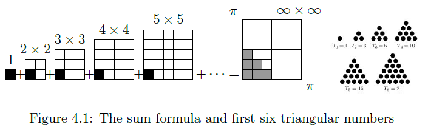
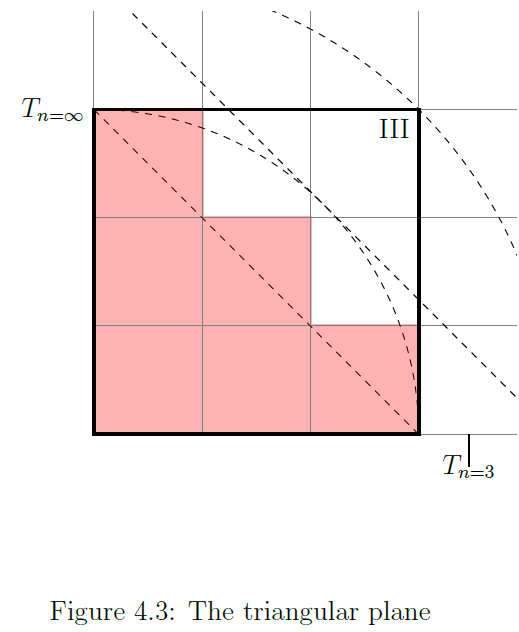
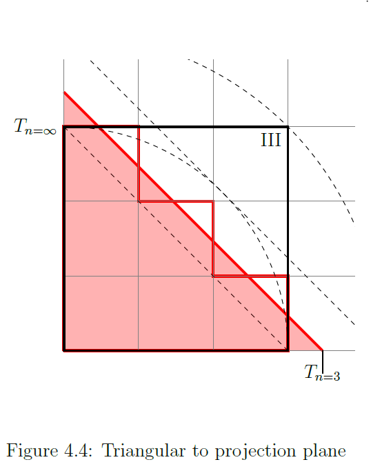
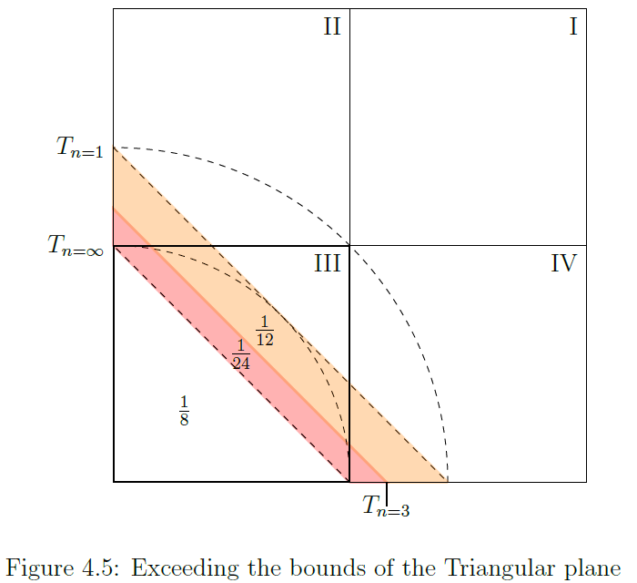
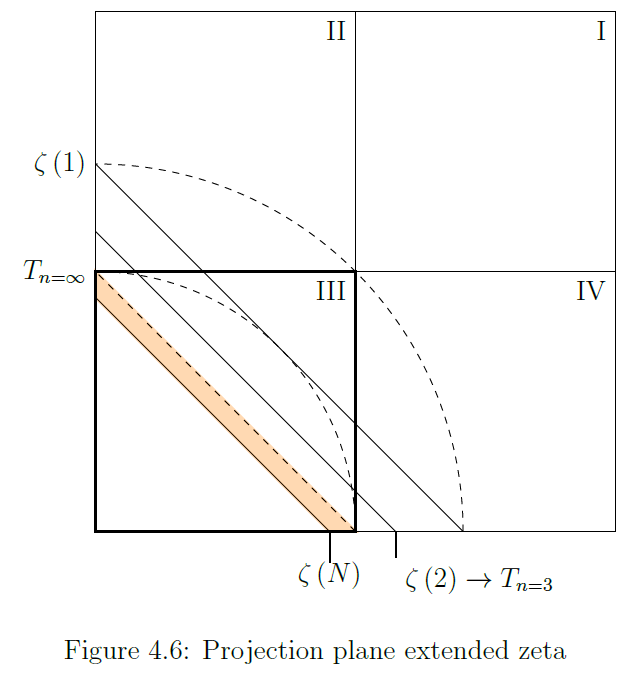
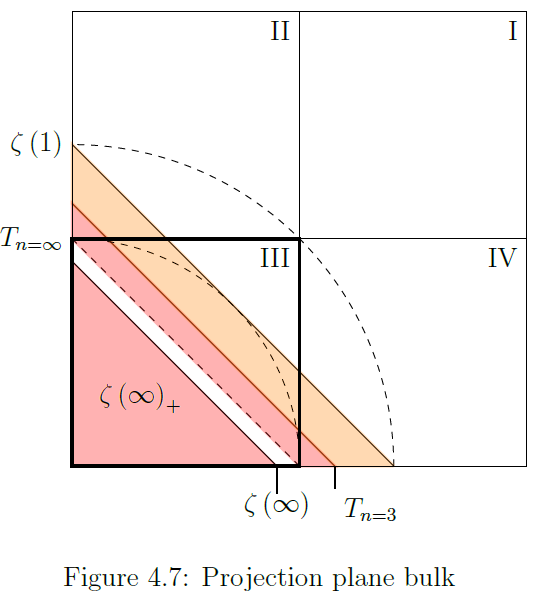
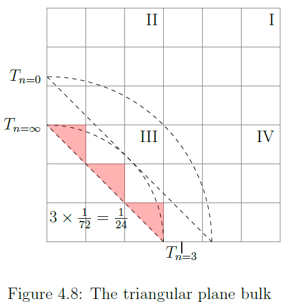
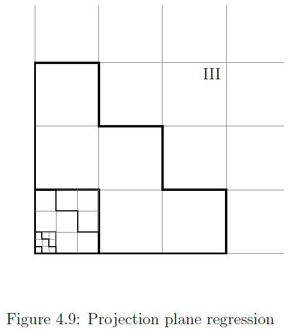
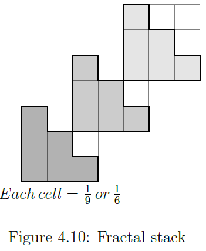

Working notebook — speculative, unfinished, not peer-reviewed.
The triangular numbers
A triangular number or triangle number counts objects arranged in an equilateral triangle, [...]. The nth triangular number is the number of dots in the triangular arrangement with n dots on a side and is equal the sum of the n natural numbers from 1 to n.

F4.01 The sum formula and first six triangular numbers
The sum formula mapped as in figure 4.1 is a rather naive graphical representation of the zeta function value for $\zeta\left(2\right)$.
Is the infinite sum of reciprocal squares connected to the triangular numbers? The final result after adding the whole infinity of reciprocal squares can be represented as such, but does it offer any explanatory powers to do so?
Mathematical universe
The triangular numbers and the zeta function are mathematical abstractions that can not in them selves exhibit dynamical behavior, nonetheless, we find that the under laying numerical sequence does reflect some tangible dynamical process.
The conclusion therefor must be that numerical abstraction necessarily depends on, derives from, what is considered to be the physical nature of the world we observe.
Overall we find that it seems as if observing a dynamic structure in a continues state of collapse. In fact this notion of mathematics emerging from physical reality and state of collapse is exactly what needs to be modeled for the hypothesis to be correct.
Figure 'The sum formula and first six triangular numbers' showing the area $A=\pi^{2}$ divided in 4 quadrants represents the mathematical universe, a complete convex set.
Wikipedia:A complete convex set. The figure does not have explanatory power for the dynamic behavior, that will be handled in chapter 7.
In this chapter the apparent fractal property of self-similarity and dynamic fingerprint will be identified, the lower left ($3_{th}$) quadrant will be shown to represent the end state of the area as a whole.
The Planes
Projection Plane
F4.02 The projection plane
The projection plane $A_{\square}$ (fig. 4.2) measures $1\times1\thinspace unit$, subdivided into 4 quadrants, numbered from the top right, anticlockwise I, II, III and IV. This plane is assigned a scale with sides of length $1:\pi$ and thus defines the projection plane to $A_{\square}=\pi^{2}$, i.e. the continuum $\mathbb{R}^{2}$.
The marker $T_{n=3}$ on the x-axis, (also projects on the y-axis), marks the extend of an isosceles right angle triangle measuring $\frac{1}{6}A_{\square}=\frac{\pi^{2}}{6}$.
Similarly the two arcs at $x=0.5$ and $x=\sqrt{2}^{\thinspace-1}$ define the two hypotenuses, $T_{n=0}$ as upper bound and $T_{n=\infty}$ as lower bound, below which the triangular numbers project as area of the continuum $\mathbb{R}^{2}$, also as isosceles right angle triangles.
Triangular Plane
F4.03 The triangular plane
The rational projection of the triangular numbers is contained within the limits of quadrant III, the triangular plane $A_{\Delta}$ (see fig. 4.3).
The set of numbers $n<=T_{n}$, triangular number $T_{n}=\frac{1}{2}n(n+1)$, projects on a $n\times n$ grit from the lower left corner up to and over the diagonal running from upper left to lower right, e.g., the $3\times3$ projection of $T_{n=3}$ results in a grit of 9 squares of which 6 are occupied.
The total affected area can be expressed in relation to:
- The projection plane: $T_{n=3}\rightarrow A_{\square}=\frac{6}{4\times9}=\frac{6}{36}=\frac{1}{6}$
- The triangular plane: $T_{n=3}\rightarrow A_{\Delta}=\frac{6}{9}$
The projection plane: $T_{n=3}\rightarrow A_{\square}=\frac{6}{4\times9}=\frac{6}{36}=\frac{1}{6}$
The triangular plane: $T_{n=3}\rightarrow A_{\Delta}=\frac{6}{9}$
Proportion above hypotenuse
Except for the limiting case $\underset{n\rightarrow\infty}{lim}\thinspace T_{n}$, there is a portion of the affected area that projects above the hypotenuse of quadrant III. The sum of the triangles projected above the hypotenuse also add up to an area, for $n=3$ this adds up to:
Proportional to the projection plane: $T_{n=3}\rightarrow A_{\square}=\frac{n}{2}\left(2n\right)^{-2}=\frac{1}{24}$
Proportional to the triangular plane: $T_{n=3}\rightarrow A_{\Delta}=\frac{n}{2}\left(n\right)^{-2}=\frac{1}{6}$
Affected area in the limit
At $\underset{n\rightarrow\infty}{lim}T_{n}\rightarrow T_{n}=\infty$ the affected area is infinite dense, solely consisting of dimensionless points.
In the limit there is no affected area remaining above the hypotenuse, and the affected area is $A_{\Delta}=\frac{1}{2}\text{→}A_{\square}=\frac{A_{\Delta}}{A_{\square}}=\frac{1}{8}$.
In this configuration the hypotenuse of the affected area will be $c=\frac{1}{2}\sqrt{2}\propto\frac{\pi}{2}\sqrt{2}$.
Triangular projection to Surface Area
F4.04 Triangular to projection plane
The area projected by square area units in the triangular plane $A_{\Delta}$, can also be represented by a continuous triangular section of the projection plane $A_{\square}$ as a whole with right angle sides (note the emphasis) $a=b=\sqrt{2A_{\Delta}}$.
Such a projection for the triangular numbers will exceed the bounds of quadrant III for all triangular numbers with exception for the limiting case which projects on the diagonal of quadrant III, see fig. F4.04 triangular to projection plane.
The hypotenuse of $Area\rightarrow T_{n=3}=6$ has length: $c_{n=3}=$$\sqrt{2\times Area}\times$$\sqrt{2}=\sqrt{24}$.
The hypotenuse at $T_{n=3}$ sections off exactly the affected area as shown in the triangular projection $\frac{1}{6}=\frac{1}{8}+\frac{1}{24}$. In essence providing a continuous representation of the discrete triangular projection.
By this procedure both $T_{n=3}$ and $\zeta\left(2\right)=\frac{\pi^{2}}{6}$ are mapped to the projection plane.
The emphasis on with right angled sides, has a purpose, a triangle number counts objects arranged in an equilateral triangle and not in a right sided triangle.
Hybrid right and equilateral triangle
There is one aspect that makes the right angled projection a model for a equilateral triangle and that is the arrangement of the triangular numbers. Note that $T_{n=3}$ projects 3 unit squares along the x and y axis, *but also 3 units along the diagonal*. The projection is equilateral when expressed in numbers of units.
F4.05 Exceeding the bounds of the Triangular plane
Figure 4.5 shows the maximum area which any triangular number grid can possibly occupy when projected as continuous area.
In the the total area below the hypotenuse for $T_{n=3}$ is $\frac{1}{8}+\frac{1}{24}=\frac{1}{6}$. The remainder of the shaded area between $T_{n=3}$ and the limit at $T_{n=0}=\left(\sqrt{2}\right)^{-1}$ measures $\frac{1}{2}\left(\sqrt{2}^{\thinspace-1}\right)^{2}-\frac{1}{6}=\frac{1}{12}$.
The process starts with $Area=\frac{1}{2}\left(\sqrt{2}^{\thinspace-1}\right)^{2}-\frac{1}{6}=\frac{1}{12}$ and this area reduces as the cycle approaches $lim_{n\rightarrow\infty}\rightarrow A_{\Delta}=\frac{1}{2}\text{→}\frac{A_{\Delta}}{A_{\square}}=\frac{1}{8}$, a difference of $\frac{1}{8}-\frac{1}{12}=\frac{1}{24}$,
which in the triangular projection for $T_{n=3}$ is the part of the affected area exceeding the hypotenuse of the triangular plane, e.g., $A=\frac{3\times 0.5}{6\times 6}=\frac{1.5}{36}=\frac{1}{24}$.
Area accounting in the plane
The Bernoulli brothers found proof for the divergence of the harmonic series, $1+\frac{1}{2}+\frac{1}{3}+\frac{1}{4}+\dots=\infty$.
Consider that the triangular number $T_{n=1}$ projects in a $1\times1$ grid in the triangular plane and has $a=\sqrt{2\times\frac{1}{4}}=\sqrt{2}^{\thinspace -1}$, and furthermore that the harmonic series is equivalent to $\zeta\left(1\right)=1+\frac{1}{2^1}+\frac{1}{3^1}+\frac{1}{4^1}+\dots$.
In table 4.1 discrete triangular continues projection plane, we find that the maximum affected area is $A_{\square}=\frac{1}{4}$.
Table 2.1 zeta function values, lists “no value” for $\zeta\left(1\right)$, the harmonic series. However, in this particular reference frame a definite closed value can be assigned to the harmonic series by completing the pattern:
This needs to be justified for $\zeta\left(1\right)$. Considering that the mathematical universe is $A_{\square}$, where do the function values $\zeta\left(s\right)\forall s\neq 2$ project on the projection/triangular plane? The answer is intriguing, first the context for $\zeta\left(2\right)$ should be clear.
Table 4.1 discrete triangular continues projection plane, shows three sections, connecting Cartesian triangular projection and associated spherical geometry.
Section $A_{\Delta}\,Triangular\,plane$: “Discrete” lists the area affected, “Continue” lists the associated right angle sides $a=b$ for the projection (fig. 4.04 triangular to projection plane), onto the projection plane.
section $A_{\square}\,Projection\,plane$: “Closed” lists the from “n” derived “intermediate radius” as the closed formula $r_{q}=\sqrt{\frac{n}{n+1}}$, the “Calculated” value for $r_{q}=\sqrt{\frac{n}{n+1}}$ is derived from the ratio to which the limit is approached, $r_{q}=\frac{0.5}{\sqrt{2\times A}}$.
Then finally section $Proportional\,SA$: the conversion of the “intermediate radius” using the primorial structure.
Listed is the proportional surface area associated with the radius $r_{x}=\frac{r_{q}}{\sqrt{P\Delta\left(\looparrowright^{-1}\right)}}$. By ratio $SA\propto\frac{4\pi\left(r_{x}\right)^{2}}{\pi^{2}}$ we find that the mapping for $T_{n=3}$ relates to $SA=\pi^{2}$ by application of the primorial ratios $P\Delta$ and $\looparrowright$.
The progression from $a=\sqrt{2}^{\thinspace-1}$ to the limit a=0.5 can be, evidently, expressed as a ratio $r_{q}=\frac{0.5}{a}$, which has as closed form $r_{q}=\sqrt{\frac{n}{n+1}}$.
Table 4.1, shows that the primorial ratios reflect some intimate connection between two distinct worlds, the flat Cartesian triangular projection and the curved surface area of spherical geometry.
At $n=3$, table 4.1, we find that the affected triangular area amounts to $A=\frac{A_{\square}}{6}$, and that the proportional surface area is $\pi^2$. Assumed spatial aspect of $\zeta\left(2\right)=\frac{\pi^{2}}{6}$ is closely related to $T_{n=3}$ by $P\Delta$ and $\looparrowright$, which follow from the primorial function, and therefor from the prime numbers.
Table 4.2 projection plane range for all s, tabulates the values for $s=\{1,\dots,6,\infty\}$, where for $s=1$ the proposed value $\frac{\pi^2}{4}$ is used.
The values for $\zeta\left(s>2\right)$ in column $a=\sqrt{2A}$ all result in values $\sqrt{2A}<0.5$.
This means (see figure 4.6) that none of the $\zeta\left(s>2\right)$ will be expressed in the infinite range of triangular numbers $T_n \left(a\right)=\left[\sqrt{2}^{-1},0.5\right]$, as if they do not exist at all. they do, however, have a limit at $\frac{1}{\pi}\sqrt{2}$.

F4.06 Projection plane extended zeta
The value for $\zeta\left(s=1\right)$ in column $SA\propto\pi^2$ lists $SA\propto\frac{6}{9}\pi^{2}$, this result hints at a fractal property if interpreted as a result of dynamic behavior, but does not confirm conclusively that $\zeta\left(1\right)=\frac{\pi^2}{4}$ is valid.
The interpretation of $A_{\square}=\frac{6}{9}\pi^{2}$ is that it indicates a previous cycle of $\zeta\left(2\right)=\frac{\pi^{2}}{6}$ when the ratio affected cells for the triangular plane reached $A_{\Delta}=\frac{6}{9}$.
The fraction $\frac{6}{9}$ is associated with the affected area of the triangular plane $A_{\Delta}$ in the third quadrant of the projection plane $A_{\square}$ resulting from $\zeta\left(2\right)=\frac{\pi^2}{6}$, and here we find this configuration superimposed on the projection plane $A_{\square}=\frac{6}{9}\pi^{2}$ as if it is the triangular plane.
At $\zeta\left(1\right)$ the affected area of the projection plane $A_{\square}$ is $\frac{6}{9}$, mirroring the triangular plane $A_{\Delta}$ at $\zeta\left(2\right)$.
The value $\zeta\left(2\right)=\frac{\pi^{2}}{6}$, indicates that both projection plane and triangular plane are projections of the same area $\pi^2$ at two distinct moments of some recursive process.
The configuration/function value $\zeta\left(2\right)=\frac{\pi^2}{6}$ seems to represent some equilibrium.
The triangular cycle $T_{n\{1,\dots,\infty\}}$ only holds $\zeta\left(s\right)$ for $s\in\{1,2\}$, values for $\zeta\left(s>2\right)$ are not represented within the triangular cycle.
Those values cannot be mapped as triangular number grid in quadrant III, however, the values can be mapped as affected area in the mathematical universe of $A_{\square}$.
In table 4.1 discrete triangular continues projection plane, we find that the value for $\zeta\left(2\right)$ coincides with $n=3\rightarrow a=\sqrt{2\times\frac{1}{6}}$ and a proportional $SA=\pi^2$.
At the start of the triangular cycle we find $T_{n=1}\rightarrow$$ r_{x}\propto SA=$$\frac{6}{9}\pi^{2}$, the total increment in the range $\zeta\left(1\right)\rightarrow\zeta\left(2\right)$ is therefor $\left(\frac{A_{\square}}{A_{\Delta}}\right)\times\left(\frac{\pi^{2}}{\frac{6}{9}\pi^{2}}\right)=4\times\frac{3}{2}=6$.
The projection for $\zeta\left(\infty\right)$ (see table 4.2 projection plane range for all s) yields the radius for a sphere with $SA\propto\left(\frac{\pi^{2}}{6}\times\pi^{2}\right)$ which is an increment in surface area by a factor $\zeta\left(2\right)=\frac{\pi^{2}}{6}$ in the range $\zeta\left(2\right)\rightarrow\zeta\left(\infty\right)$.
However, because the values for $\zeta\left(s>2\right)$ fall outside the bounds of the triangular projection, we established that the mapping to $A_\Delta$ does not apply. In stead, those values indicate the projection to some future state in a continuous collapse of surface area.
The values for $s>2$ for the Projection plane/Triangular plane assembly can be interpreted as reflecting a relative position/distance removed from the current equilibrium at value $\zeta\left(2\right)$.
In this sense the triangular numbers projected onto the projection plane $A_{\square}$ can be interpreted as a scale invariant snapshot of any stage in hypothesized state of continuous collapse. Which, of course, implies that for this to be true, also the natural numbers $n\in\mathbb{N}$ must be interpreted as a set of labels attached to relative positions on a gliding scale.
For now we assume this dynamical aspect as a given, and proceed under the assumption that this geometric model represents a phase shift in the mathematical universe that, during hypothesized collapse, geometrically fixates the relative positions of those labels.
Bounds of the phase shift
The phase shift projects within static bounds on the projection plane $A_{\square}$.
We find values for $SA\propto\frac{6}{9}\times$$ \pi^2,SA=1\times$$\pi^2,\,and\,SA\propto$$\frac{\pi^2}{6}\times\pi^2$ (see table 4.2 projection plane range for all s).
As found previously, the scale factor $\left(\frac{A_{\square}}{A_{\Delta}}\right)=4$ is key because the triangular plane, or rather quadrant III it projects in, is clearly the scale invariant continuation of the projection plane $A_\square$.
We see that with respect to scale, $\left(\frac{A_{\square}}{A_{\Delta}}\right)\times\frac{\pi^2}{6}\propto\frac{6}{9}\pi^2$. The apparent increment in surface area from $\pi^2$ to $\frac{\pi^{2}}{6}\times\pi^2$ between $s=2$ and $s=\infty$ is, however,
a dynamical interpretation imposed on what essentially is a mathematical abstraction, so there must be some real world context in which proposed phase shift can be identified as part of some dynamical process in space/time reality.
In chapter 8 a proposal to explain the nature of this phase shift will be formulated, and a relation will be identified between the conservation laws, the nature of vacuum energy and the cosmological constant $\Lambda$.
First identify the static numerical pattern that seems to occurs at the point of equilibrium for the ratio affected area:
For the projection plane $A_{\square}$, numerator and denominator are $A_{\square}\rightarrow\frac{6^{n}}{6}$
For the triangular plane $A_{\Delta}$, numerator and denominator are $A_{\Delta}\rightarrow\frac{6^{n+1}}{9}$.
Thus the increase of the affected area progresses in a $1:4$ ratio (see eq. 2.17 spatial ratio).
which indicates the total affected area of $A_{\Delta}$ must be $\frac{6}{6}A_{\square}=1A_{\square}$, or corrected for scale in-variance, $\frac{A_{\Delta}}{A_{\square}}A_{\square}=$$\frac{1}{4}A_{\square}=$$A_{\Delta}$ for each iteration.
The total affected area of $A_{\Delta}$ is therefore $A_{\Delta}=$$\frac{A_{\square}}{4}=100\\%$ and therefor justifies $\zeta\left(1\right)=\frac{\pi^2}{4}$.
Longest root of a square area
The affected area $A_{\Delta}=100\%$ gives the maximum value for the right angled side of the projection plane $A_{\square}$; $a=\sqrt{2\left(\frac{1}{4}\right)}=$$\sqrt{\frac{1}{2}}=$$\sqrt{2}^{\thinspace-1}$.
The hypotenuse from $a=\sqrt{2}^{\thinspace-1}$ to $b=\sqrt{2}^{\thinspace-1}$ is off course $c=a\sqrt{2}=1$, the hypotenuse of the mathematical universe $A_{\square}=\pi^2$, Longer lines that represent the root of a square area, do not exist in our mathematical universe.
Further in this chapter a connection is made between this longest line and Planck's constant, $\hbar\approx$$\sqrt{\frac{\sqrt{\pi^2}\sqrt{2}}{4}}2\pi\approx$$6.621895274$.
Longer lines representing the root of a square area would imply that the count of elements $\underset{n\rightarrow\infty}{lim}\, T_{n}\rightarrow$$ \#n\in\mathbb{N}>\infty$, which is nonsensical.
The maximum right angled side value for the affected area projection is $\underset{n\rightarrow\infty}{lim}T_n\rightarrow\,$$ A_{\Delta}=\frac{1}{2}\rightarrow$$ a=\sqrt{2A_{\Delta}}\sqrt{2}=$$\sqrt{2}^{-1}\approx0.707$.
Continuing the cycle brings us at ratio $\frac{6^{2}=36}{6}A_{\square}\rightarrow$$\frac{6^{3}=216}{9}A_{\Delta}$ or $6A_{\square}\rightarrow$$24A_{\Delta}$ for a total affected area of $\frac{A_{\Delta}}{A_{\square}}=\frac{6}{24}=\frac{1}{4}A_{\square}$, the ratio stays the same $\frac{1}{4}$ ad infinitum.
This seems to confine us to an infinite cycle during which only $\zeta\left(2\right)$, and by completing the pattern $\zeta\left(1\right)$, play a roll within the bounds of the infinite series of $\underset{n\rightarrow\infty}{lim}\rightarrow$$ T_{n}\rightarrow$$\#n\in\mathbb{N}$.
Volume independent of number
The maximum size of the right angled side is $a=\sqrt{2}^{\thinspace-1}$. In the limit $\underset{n\rightarrow\infty}{lim}\rightarrow T_{n}\rightarrow\#n\in\mathbb{N}$ the right angled sides contain each $\#n\in\mathbb{N}$, but also the hypotenuse $c=\#n\in\mathbb{N}$ (see subsection Triangular_projection_to_Surface_Area).
All 3 sides count $\#n\in\mathbb{N}$ elements of equal area. Application of the multiplication factor $\sqrt{2}$ to account for “absolute size” measured over the $45^\circ$ hypotenuse makes no sense, this because in the limit both the straight angled sides and the hypotenuse consist of an equal number of dimensionless points and therefor represent lines of equal length, i.e. forming a distorted equilateral triangle.
There is a limit beyond $\underset{n\rightarrow\infty}{lim}\rightarrow T_{n}$, out of reach for the window provided by $T_{n}$, see table \ref{tab:projectionplanerangeforalls} - 'Projection plane range for all s'.
There for s=2 we find that $\sqrt{2\times\frac{1}{6}}=$$\sqrt{\frac{2}{3}}=$$0.5773502692$ and we know that the limit for the triangular projection is: $a=\sqrt{2\times\frac{1}{8}}=0.5$ i.e. the length of triangular plane $A_{\Delta}$ sides a and b, effectively the lower limit reached by the triangular projection.
For all $\zeta\left(s>2\right)$ the values for $a=\sqrt{2A}$ overshoot the lower limit $\underset{n\rightarrow\infty}{lim}\,T_{n}\rightarrow a=0.5\rightarrow A_{\square}=\frac{1}{8}$ e.g. $\zeta\left(3\right)\rightarrow\sqrt{2\times\frac{1}{8.210596}}=0.4935460224\rightarrow\frac{A_{\Delta}}{A_{\square}}=\frac{1}{8.210596}$.
This can be understood as a function of volume, $\frac{1}{8}$ affected area as limit implies the reduction of a volume by cutting its radius in half, $V_{1}\times\frac{1}{8}=V_{0}$.
To find values in the range $\frac{\pi^{2}}{8.210596}\rightarrow\frac{1}{8.210596}<\frac{1}{8}$ must, by completing the pattern, imply this fraction is addressing a volume that is part of a secondary cycle, one that further reduces to $V_{0}\times\frac{1}{8}=V_{-1}=\left(\frac{1}{8}\right)^{2}=\frac{1}{64}$.
However, in the limit the current cycle resets numerically back to the start of infinity, see eq.\ref{eq:back-to-start-of-infinity}. This occurs because, as hypothesized, the frame of reference presented by the zeta function consists of a static numerical pattern of affected surface area at the point of equilibrium $\zeta\left(2\right)=\frac{\pi^2}{6}$.
Outside the limit
Not all hypotenuses are created equal. Al values $\zeta\left(s\right)\,\forall s\left(1<s<=2\right)$ result in $a=\sqrt{2A}>=0.5$, i.e. the resulting hypotenuse is $\left(\sqrt{2}^{\thinspace-1}<= a\sqrt{2} <=1\right)$. These values represent the complete range of the triangular projection cycle (fig. projection plane extended zeta).
The limit for the triangular projection in $A_{\Delta}$, $c>=\sqrt{2}^{\thinspace-1}$, is geometrically hard coded by the premise that the triangular projection has to be a grid of $n^{2}$ overlay-ed on $A_{\Delta}$, such that it completely fills quadrant III of the projection plane $A_{\square}$.
Figure projection plane extended zeta depicts a shaded area between the hypotenuse at $\zeta\left(\mathbb{N}\right)$ and the hypotenuse at $T_{n=3}\rightarrow a=0.5$, this is the projection domain for $\zeta\left(s>2\right)$.
The first value that projects outside the cycle is $\zeta\left(3\right)\rightarrow\sqrt{2\times\frac{1}{8.210596}}=0.4935460224$ and the last $\zeta\left(\infty\right)\rightarrow\sqrt{2\times\frac{1}{\pi^{2}}}=\frac{1}{\pi}\sqrt{2}=0.45015815814$.
For values of $a=\sqrt{2A}<0.5\rightarrow a^{2}<\frac{A_{\square}}{4}$ the resulting affected surface area consists of insufficient dimensionless points to generate a triangular grid of $\frac{\mathbb{N}}{2}\left(\mathbb{N}+1\right)$.
For all function values $\zeta\left(s\right)$ an associated surface area exists, each of those have right angled sides $a=\sqrt{2A}$ in the projection plane. However, lacking a reference frame like the projection/triangular plane assembly would make it impossible to say if this surface area is defined by a mapping to $T_{n}$, or falls outside the static bounds of the phase shift. In such case all hypotenuses do seem to be created equal.
This is not a trivial observation, because it brings us to the Riemann hypothesis, can it simply be that a proof for the Riemann hypothesis, ‘All non trivial zeros have real part one half’, is unobtainable because the tool of complex analysis simply lacks the proper reference frame to distinguish between classes of non trivial zeros? In chapter 7 a proposition to answer this question will be formulated.
Zeta at the limit, the surface asymptote
The range for the triangular numbers is $a=\left[\sqrt{2}^{\thinspace-1},0.5\right]$, in this range only the values for $\zeta\left(1\right)$ and $\zeta\left(2\right)$ occur as discrete projection of $\underset{n\rightarrow\infty}{lim}\,T_{n}$:
The values for $\zeta\left(s>2\right)$ project to quadrant III of the projection plane $A_\square$, but not in its triangular plane $A_\Delta$ identity because the value is out of bounds for $a=\left[\sqrt{2}^{\thinspace-1},0.5\right]$. However, the argument for scale invariance still applies, quadrant III scales to $A_{\square}=\pi^{2}$. the shaded area $\zeta\left(\infty\right)_+$, lays beyond s at infinity.
F4.07 Projection plane bulk
Figure 4.7 depicts the shaded triangle $\zeta\left(\infty\right)_{+}$. By $\underset{s\rightarrow\infty}{lim}\,a=\sqrt{2A}>=\frac{\sqrt{2}}{\pi}$ the shaded area $\zeta\left(\infty\right)_{+}$ lays beyond $\underset{s\rightarrow\infty}{lim}\,\zeta\left(s\right)$.
Completing the pattern analogues to $\zeta\left(2\right)\rightarrow a=\sqrt{2A}=\sqrt{2\times\left(\frac{\pi^{2}}{6}\right)}\rightarrow\sqrt{2\times\left(\frac{1}{6}\right)}$ gives $\zeta\left(\infty\right)\rightarrow a=\sqrt{2\times\left(\frac{\left[\pi^{2}\right]}{\pi^{2}}\right)}\rightarrow a=\sqrt{2\times\left(\frac{1}{\pi^{2}}\right)}=\frac{1}{\pi}\sqrt{2}=0.4501581581$. Then follows $r_{q}=\frac{0.5}{a}=\left(0.900316316\right)^{-1}$.
The associated radius for the sphere is $r_{x}=\frac{r_{q}}{\sqrt{p\Delta\left(\looparrowright\right)^{-1}}}=1.136630193$ and yields a surface area of $SA=4\pi\left(r_{x}\right)^{2}=\pi^{2}\left(\frac{\pi^{2}}{6}\right)$ (see table 4.2 projection plane range for all s). A factor $\frac{\pi^{2}}{6}$ bigger than our universe, the projection plane. Because some collapsing surface area is assumed, the scale factor $\frac{A_\Delta}{A_\square}=\frac{1}{4}$ needs to be observed.
This means that the initial configuration of $\zeta\left(1\right)$ is also the final configuration of $\zeta\left(2\right)$, this is sufficient to describe the recursion in terms of the phase shift with exclusion of the values for $s>2$.
Likewise the result for $\zeta\left(\infty\right)\rightarrow SA=\frac{\pi^{2}}{6}\left(\pi^2\right)$ is a factor 4 to big. Therefore $SA=\frac{1}{4}\left(\pi^{2}\left(\frac{\pi^{2}}{6}\right)\right)$ scales to the universe.
Plugging in this value produces a surface area $SA=\frac{1}{4}\times\frac{\left(\pi^{2}\left(\frac{\pi^{2}}{6}\right)\right)}{\pi^2}=\frac{\pi^{2}}{24}$. This is a significant result because $3\times\frac{1}{72}=\frac{1}{24}$ is exact the area that exceeds the hypotenuse of the triangular plane for $\zeta\left(2\right)$, see figure 4.8 triangular plane bulk.
F4.08 The triangular plane bulk
The hypotenuse of the triangular plane is off course the limit $\underset{n\rightarrow\infty}{lim}\,T_{n}$. The value $SA=\frac{\pi^{2}}{24}$ remaining after $\underset{s\rightarrow\infty}{lim}\,\zeta\left(S\right)$ is exact the value $\zeta\left(2\right)=\frac{\pi^{2}}{6}$ that correlates with a 4-fold reduction in surface area by recursive application of $\zeta\left(2\right)$.
Herein is the proof that $\underset{s\rightarrow\infty}{lim}\,\zeta\left(s\right)$ is fully contained within the limits of $\underset{n\rightarrow\infty}{lim}\,T_{n}$, al be it that $\zeta\left(s\right) \forall s \left<2,\infty\right>\ni T_n$.
The Spatial ratio $S_{ratio}=\frac{1}{4}$, see equation 2.17 spatial ratio, only holds for the infinite sum/product $\zeta\left(2\right)=\frac{\pi^{2}}{6}$.
Equilibrium at SA=V, Planck
The value $\zeta\left(1\right)=\sum_{n}n^{-1}=\frac{\pi^{2}}{4}$ completes the pattern for $\zeta\left(s\right)\forall s\in\mathbb{N}$ and seems sufficiently justified.
Crucial is that only $\zeta\left(2\right)$ maps to a discrete solution in $T_n$. Also does $\zeta\left(1\right)$ but this is by completing the pattern.
What is special about $\zeta\left(2\right)=\frac{\pi^2}{6}$ operating on a unit surface area $\pi^{2}$ is the ratio $\left(\frac{1}{8}+\frac{1}{24}=\frac{1}{6}\right)$. Herein we find a profound key to the solution, one that is of significance in connecting the dots between $\zeta\left(2\right)$ and physics.
The transition $\pi^{2}\rightarrow\frac{\pi^{2}}{8}$ can be interpreted as a function of volume but $\zeta\left(2\right)$ is expressed as a function of (surface) area. At the function value of $\zeta\left(2\right)$ a unique point of equilibrium occurs that sits at the source of the emergence of Planck’s constant $h=6.62607015\times10^{-34}J.s.$.
The projection plane exposes a point of equilibrium between volume and surface area, $\zeta\left(2\right)$, at which Surface Area and Volume can be recognized as expressions of one underlying principle. Table 4.3 the base of Planck's constant, gives a break down for the formulas of surface area and volume.
A break down for the formulas of surface area and volume.
For every unit surface area $SA=1$, there is $V=\frac{1}{9}$ unit of volume. The ratio is defined as $T_{h}\overset{def}{=}1+\frac{1}{9}=0.9^{-1}=1.111111\dots$ from which Planck’s constant $h=6.62607015\times10^{-34}J.s.$,is approached by $h_{*}=\sqrt{T_{h}}\times2\pi\sim h\rightarrow\Delta h\approx\frac{2201}{2200}$. The equilibrium follows from the fractal argument for zeta.
The fractal argument for zeta
F4.09 Projection plane regression
A recursive regression of the triangular plane, quadrant III
Figure 4.9 depicts a recursive regression of the triangular plane, quadrant III, as found in the configuration for $\zeta(1)\rightarrow SA\propto\frac{6}{9}\pi^2$.
The fractal iteration in the lower left cell of quadrant III occupies $\frac{1}{6}$ of the affected area of quadrant III.
If we assume the recursive product $\prod_{n}\zeta\left(2\right)^{n}=\left\{1,\frac{1}{6},\frac{1}{36},\frac{1}{216},\frac{1}{1296},\dots\right\}$ then for each iteration we find that the ratio affected area $\zeta\left(2\right)=\frac{\pi^2}{6}$ must have the scale invariant ratio $SA=\pi^2$, i.e. represent the universe of the projection plane $A_{\square}$ as a whole.
At the same time we find that a relation exist between $\zeta\left(s\right)\forall s\left\{1,2,\infty\right\}$. There is an equivalence between the calculated SA value of $\zeta\left(s\right)$ and the function value of $\zeta\left(s+1\right)$, see eq. \ref{eq:projectionplanescaling}.
This results in a regression pattern where the values appear to project in a region $\frac{A_\Delta}{9}$ of the universe measuring $\frac{9}{9}=1\frac{1}{8}$. This proportion can be interpreted as a volume wrapped by a (continuously reducing) surface area.
Table 4.4 — Zeta SA–Volume equilibrium
\(s\)
\(\tfrac{1}{4} \propto A_{\Box}\)
\(\tfrac{6}{9} \propto A_{\triangle}\)
ratio \(\propto \zeta(2)\)
\(\#\Box\;cells\)
\(\#\blacksquare\;cells\)
\(\#\triangle\;cells\)
\(\#\blacktriangle\;cells\)
0
\(6^{0}=1\)
\(\tfrac{3^{0}}{6^{0}}=1\)
\(3^{0}=1\)
\(\tfrac{6}{9}\times 3^{0}=\tfrac{6}{9}\)
\(\tfrac{6^{0}}{\tfrac{6}{9}}=\tfrac{9}{6}\)
1
\(6^{1}=6\)
\(\tfrac{3^{1}}{6^{1}}=\tfrac{1}{2}\)
\(3^{1}=3\)
\(\tfrac{6}{9}\times 3^{1}=2\)
\(\tfrac{6^{1}}{2}=3\)
\(2^{\bigstar}\)
\(6^{2}=36\)
\(\tfrac{3^{2}}{6^{2}}=\tfrac{1}{4}\)
\(3^{2}=9\)
\(\tfrac{6}{9}\times 3^{2}=6^{\bigstar}\)
\(\tfrac{6^{2}}{6}=6^{\bigstar}\)
3
\(6^{3}=216\)
\(\tfrac{3^{3}}{6^{3}}=\tfrac{1}{8}\)
\(3^{3}=27\)
\(\tfrac{6}{9}\times 3^{3}=18\)
\(\tfrac{6^{3}}{18}=12\)
4
\(6^{4}=1296\)
\(\tfrac{3^{4}}{6^{4}}=\tfrac{1}{16}\)
\(3^{4}=81\)
\(\tfrac{6}{9}\times 3^{4}=54\)
\(\tfrac{6^{4}}{54}=24\)
5
\(6^{5}=7776\)
\(\tfrac{3^{5}}{6^{5}}=\tfrac{1}{32}\)
\(3^{5}=243\)
\(\tfrac{6}{9}\times 3^{5}=162\)
\(\tfrac{6^{5}}{162}=48\)
The function $\zeta\left(2\right)=\frac{\pi^{2}}{6}$ represents the scale invariant ratio of affected surface area and/or volume, where volume is defined by $V=\frac{1}{6}\zeta\left(2\right)$. Realizing that each second iteration results in $SA=\frac{1}{9}$ of the initial $SA=\pi^2$ it is of course not discernible whether there exist such thing as an even or odd cycle, for all intends and purposes $SA=V$.
What must be true is that each iterative step results in a scale invariant projection of the universe that is expressed by $\zeta\left(2\right)=\frac{\pi^2}{6}$ as fraction of surface area.
If $\pi^2=1$ then we find that volume and surface area are interchangeable, see table 4.3 the base of Planck's constant, $T_{h}=0.9^{-1}=1+\frac{1}{9}$ and table 4.4 zeta, the sa/volume equilibrium for $s=2$:
This is a fractal, $A_{\square}\thinspace is\thinspace to\thinspace\zeta\left(2\right)\thinspace as\thinspace\zeta\left(2\right)\thinspace is\thinspace to\thinspace\frac{1}{9}A_{\triangle}$ (fig. projection plane regression), at which point a equilibrium exists between surface area and volume.
Here the scale invariance is preserved where each regressive step is proportionally equal to the former and the overlap is 1/9 of the completed square.
F4.10 Fractal stack
The pattern is self-similar in regression (fig. projection plane regression) where each iteration is the application of $\zeta\left(2\right)^{n+1}$ on the area representing the scale invariant universe $A_{\square}$.
In figure 4.10 the same regression is depicted, only this time the scale invariance is preserved where each regressive step is proportionally equal to the former and the overlap is $\frac{1}{9}$ for the completed square. This stacking will lead to exposing the connection between the zeta zero's and prime numbers.
The base of Planck's constant $h=6.62607015\times10^{-34}J.s.$, (table 4.3 the base of plancks constant) $T_{h}=0.9^{-1}=1+\frac{1}{9}$ is the ratio between the start of the cycle $\frac{9}{9}=1$, and the end of the cycle $\frac{1}{9}$ expressing the depletion of volume as function of reduced surface area.
In fig. projection plane regression we observe that with each successive iteration the projection plane $A_{\square}$ repeats with $\frac{\pi^{2}}{9}\rightarrow 4\,cells$ of which the bottom left cell projects $A_{\Delta}$ , the proportional size regresses as